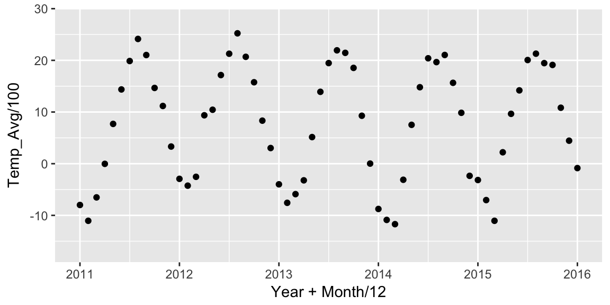
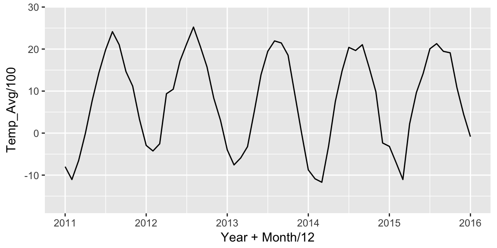
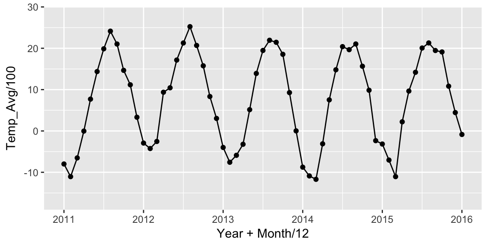
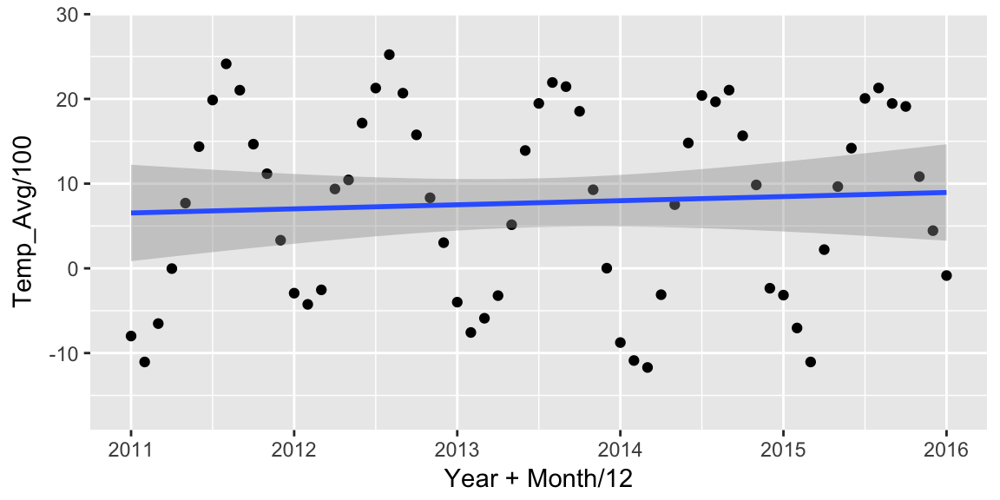
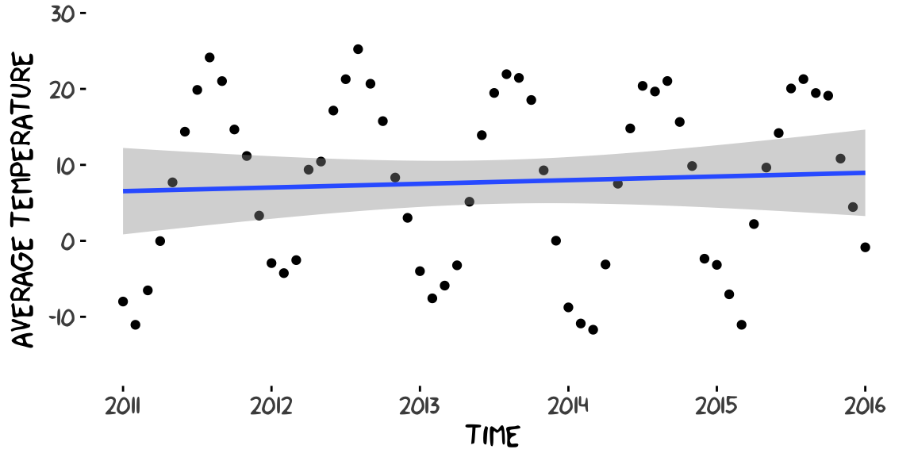
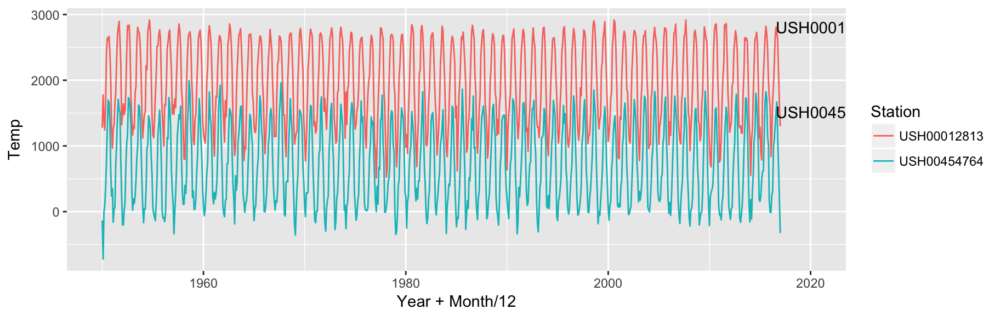
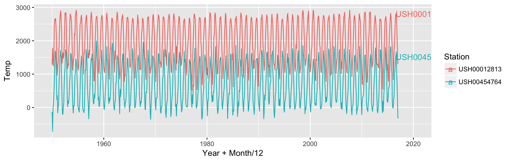

Heike Hofmann
ggplot2ggplot2?ggplot2A graphical representation (plot) consists of:
aes): data variables are mapped to graphical elementsgeoms, such as points, lines, rectangles, text, …) and statistical transformations (stats, are identity, counts, bins, …)coord): normally Cartesian, but pie charts use e.g. polar coordinatesggplot(data = FortDodge, aes(x = Year+Month/12, Temp_Avg/100)) +
geom_point() +
xlim(c(2011,2016))
ggplot(data = FortDodge, aes(x = Year+Month/12, Temp_Avg/100)) +
geom_line() +
xlim(c(2011,2016))
ggplot(data = FortDodge, aes(x = Year+Month/12, Temp_Avg/100)) +
geom_line() + geom_point() +
xlim(c(2011,2016))
ggplot(data = FortDodge, aes(x = Year+Month/12, Temp_Avg/100)) +
geom_point() + geom_smooth(method = "lm") +
xlim(c(2011,2016))
ggplot(data = FortDodge, aes(x = Year+Month/12, Temp_Avg/100)) +
geom_point() + geom_smooth(method = "lm") +
xlim(c(2011,2016)) +
xlab("Time") + ylab("Average Temperature") +
xkcd::theme_xkcd()
ggplot2 resourcesGenerally in ggplot2: every aspect of a plot can be changed, but there are good defaults based on cognitive principles.
RStudio’s cheat sheet
Online ggplot2 documentation
Email list (sign up from http://ggplot2.org/)
Load the temperature data temps.rds with readRDS.
ggplot2 package. Use a line to show the time series.each layer has several parts, the two most important are:
aes() function, we specify mappings between variables and aesthetics of the chartdata: the dataset used in the layerggplot is the layer that sets the defaults,
geom_XXX creates a layer: for each aspect it either uses the default or has to specify its own
library(tidyverse)
temps <- readRDS("../data/temps.rds")
temps %>% filter(Station %in% c("USH00012813", "USH00454764")) %>%
ggplot(aes(x = Year+Month/12, y = Temp)) +
geom_line(aes(group = Station, colour=Station)) +
geom_text(data = temps %>%
filter(Year == 2016, Month==7,
Station %in% c("USH00012813", "USH00454764")),
hjust = 0,
aes(label = Station)) + xlim(c(1950, 2020))## Warning: Removed 811 rows containing missing values (geom_path).
temps %>% filter(Station %in% c("USH00012813", "USH00454764")) %>%
ggplot(aes(x = Year+Month/12, y = Temp, colour=Station)) +
geom_line(aes(group = Station)) +
geom_text(data = temps %>%
filter(Year == 2016, Month==7,
Station %in% c("USH00012813", "USH00454764")),
hjust = 0,
aes(label = Station)) + xlim(c(1950, 2020))## Warning: Removed 811 rows containing missing values (geom_path).